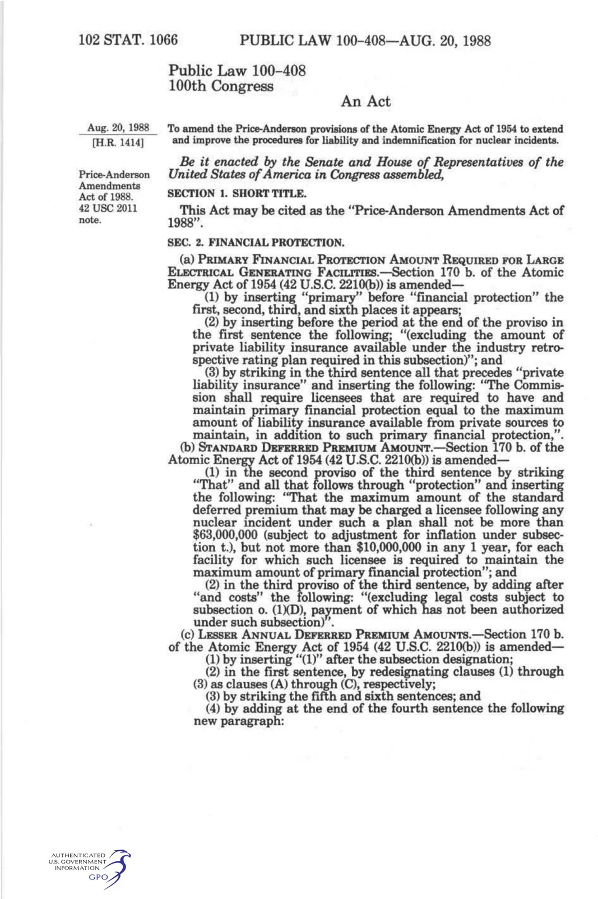
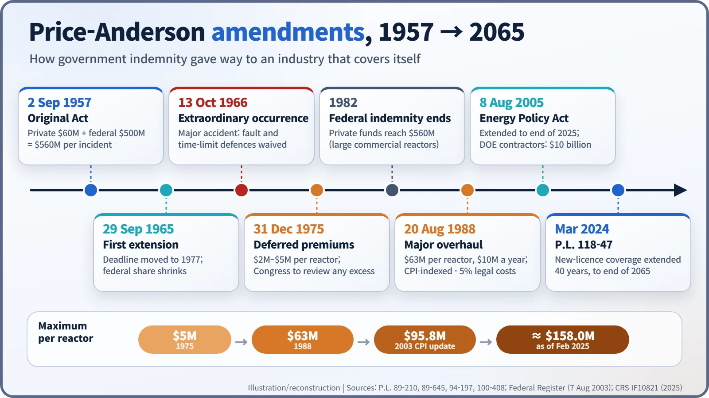
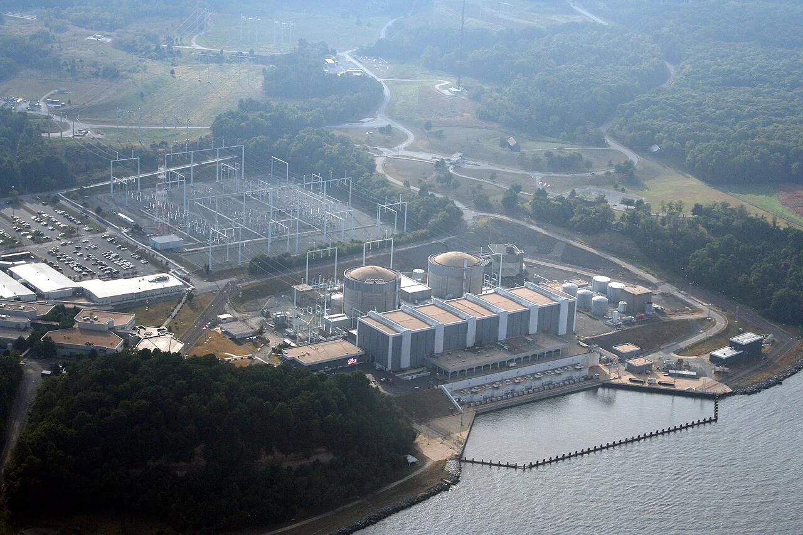
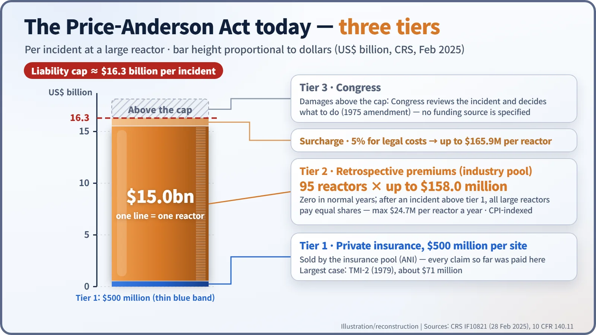

Nuclear History · 227
Insurance on Top of Insurance, Congress on Top of That — The Price-Anderson Act's Three Tiers and Nearly Seventy Years of Amendments
The waiver of defences in 1966, retrospective premiums in 1975, the end of federal indemnity in 1982 and inflation indexing in 1988 built today's roughly $16.3 billion liability system.
The Price-Anderson Act of 1957 began with private insurance topped up by up to $500 million of government indemnity. Through amendments in 1965, 1966, 1975 and 1988, and extensions in 2005 and 2024, it became a three-tier system: $500 million of private insurance per site, retrospective premiums of up to $158 million from each of 95 large reactors, and Congress above the cap. Federal indemnity for large commercial reactors ended in 1982.
An invoice for an accident you did not have
Imagine a serious accident at a nuclear plant somewhere in the United States, with radioactive material escaping well beyond the site fence. A few days later, invoices start arriving at the offices of other reactor operators — companies that had nothing to do with the accident: up to $158 million per reactor, payable in instalments of no more than $24.7 million a year. [7]
Strange as it sounds, that is how American nuclear liability actually works. The Price-Anderson Act of 1957 began as a law that said "if private insurance runs out, the government pays." Over nearly seven decades of amendments it turned into a law that says "if private insurance runs out, the industry pays for itself." Here is how that transformation happened, step by step.
Where it started: a two-storey house propped up by Washington
The original design was simple. A reactor operator bought the largest liability policy the private market would sell — $60 million at the time — and above that the Atomic Energy Commission (AEC) would indemnify up to $500 million. The cap per incident was $560 million. It was also a temporary law: it protected only facilities licensed before 1 August 1967. [6]
1965–1966: an extension, and a promise not to argue
The first extension came on 29 September 1965 (Public Law 89-210). The deadline moved to 1977, and a quiet but important clause was added: the government's $500 million would shrink by however much private insurance rose above $60 million. The total cap stayed at $560 million, so every extra private dollar meant one less federal dollar. In effect, Congress had drawn the government's exit door in advance. [1]
On 13 October 1966 (Public Law 89-645) came the "extraordinary nuclear occurrence". If the Commission found that an event had released substantial radioactive material off site and caused substantial damage, the operator and its insurers would give up key legal defences — "it wasn't our fault," "the claimant was negligent," "the time limit has expired." Victims would rarely have to prove fault, which made the system close to no-fault liability. Lawsuits were also channelled into the federal district court where the accident happened. [2]
1975: a premium you pay after the accident
The decisive invention arrived on 31 December 1975 (Public Law 94-197): the retrospective, or "deferred," premium. Large reactors — those rated at 100 megawatts electric or more — pay nothing in normal years. But if an accident anywhere exhausts the first layer of insurance, every one of them must chip in a fixed share. The law set that share at between $2 million and $5 million per reactor. Think of neighbours in a building agreeing in advance that if disaster strikes any one flat, every household will contribute a set amount. [3]
The same amendment rewrote the cap: liability would be limited to $560 million or the total private funds available, whichever was greater. Once private insurance plus deferred premiums passed $560 million, federal indemnity would simply fall to zero. As more reactors came online, that line was crossed in 1982, and government indemnity for large commercial reactors disappeared. The 1975 law also promised that if damages ever exceeded the cap, "the Congress will thoroughly review the particular incident and will take whatever action is deemed necessary and appropriate." That sentence created the third tier: Congress itself. [3]
1988: bigger numbers, tied to inflation
The 1975 law lapsed on 1 August 1987, and its successor arrived a little over a year later, on 20 August 1988 (Public Law 100-408, the Price-Anderson Amendments Act of 1988). The numbers jumped. The deferred premium could now reach $63 million per reactor, collected at no more than $10 million a year. It was to be adjusted for consumer prices at least once every five years, and an extra 5% could be charged to cover legal costs. By the 2003 inflation adjustment the premium had reached $95.8 million. [4] [5]

2005 and 2024: buying time
After the deadline of 1 August 2002, plants licensed earlier stayed covered, but new ones were left outside. [6] The Energy Policy Act of 2005, approved on 8 August 2005, extended coverage to the end of 2025 and set the limit for Department of Energy (DOE) contractors at $10 billion per incident (adjusted to $16.6 billion in 2023). Then, in March 2024, the Further Consolidated Appropriations Act, 2024 (Public Law 118-47) extended the authority by 40 years, to 31 December 2065. According to the Congressional Research Service (CRS), the Act has now been extended five times: in 1965, 1975, 1988, 2005 and 2024. Some sources attribute the 2024 extension to the ADVANCE Act; CRS identifies Public Law 118-47. [7]

The three-tier building today
Using CRS figures from February 2025: [7]
- Tier 1: $500 million of private liability insurance for each plant site.
- Tier 2: 95 reactors × up to $158.0 million each, or about $15.0 billion. With the 5% legal-cost surcharge, the total available per incident is about $16.3 billion.
- Tier 3: anything above that is for Congress to decide — and the law does not say where the money would come from.
Don't confuse "per site" with "per reactor." A site such as Calvert Cliffs in Maryland, with two reactors side by side, carries one Tier 1 policy but owes two Tier 2 shares.


No accident has yet reached beyond the first tier. The largest number of claims followed the 1979 Three Mile Island Unit 2 accident, and payments there totalled about $71 million in current dollars. One footnote: reactors smaller than 100 MWe still sit under the 1957-style arrangement, with the federal government filling the gap up to a $560 million total. [7]
Subsidy, or a guaranteed wallet?
Opinions remain divided. Critics call the liability cap an "unjustified subsidy for nuclear power that distorts energy markets," because it shields the industry from the full cost of the worst conceivable accidents. Supporters say it provides "an assured source of damage compensation that might not be available, or be paid as quickly, under the normal tort process." CRS notes that damages from Fukushima exceeded $90 billion according to media reports, and calculates that a U.S. accident with releases from three reactors at one site would face a cap of $47.8 billion. [7] In 1978 the U.S. Supreme Court upheld the Act as constitutional. [8]
A liability cap is both a ceiling on what victims can recover and a floor of money set aside in advance. The history of the Price-Anderson Act is a record of Congress deciding, again and again, who should hold up that ceiling and that floor.